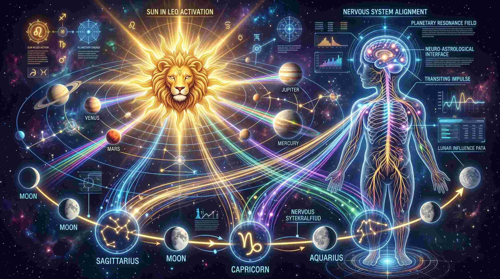

अगस्त 2026 का यह अंतिम सप्ताह (24 से 30 अगस्त 2026) ज्योतिषीय दृष्टि से अत्यधिक गतिशील और ऊर्जावान रहने वाला है। सूर्य देव अपनी स्वराशि सिंह में संचार कर रहे हैं, जो आत्मा, अधिकार और रोग प्रतिरोधक क्षमता (Immunity) को मजबूती प्रदान करते हैं। वहीं इस सप्ताह चंद्रमा का गोचर धनु, मकर और कुंभ राशि में रहेगा, जिससे मानसिक स्थिति और निर्णय लेने की क्षमता में दिन-प्रतिदिन उतार-चढ़ाव देखने को मिलेंगे।
एक मेडिकल छात्र और ज्योतिषी होने के नाते, मैं इस सप्ताह के गोचरों को शारीरिक ऊर्जा संतुलन और न्यूरो-हार्मोनल व्यवहार के चश्मे से भी देखता हूँ। आइए जानते हैं कि यह सप्ताह आपकी राशि के लिए करियर, वित्त, रिश्ते और स्वास्थ्य के मामले में क्या संदेश लेकर आया है।

इस सप्ताह की प्रमुख ग्रहीय स्थिति (Astrological Overview)
- सूर्य देव: सिंह राशि में स्थित होकर आत्मबल और नेतृत्व क्षमता को बढ़ाएंगे।
- चंद्र देव: सप्ताह के आरंभ में धनु राशि से गोचर करते हुए मध्य में मकर और अंत में कुंभ राशि में प्रवेश करेंगे।
- बुध व शुक्र: व्यापारिक बातचीत, वित्तीय लेन-देन और रचनात्मक गतिविधियों में सहायक रहेंगे।
- मंगल: कार्यक्षेत्र में गति और पराक्रम में वृद्धि करेंगे, किंतु अधीरता से बचना आवश्यक होगा।
सभी 12 राशियों का साप्ताहिक भविष्यफल (24 से 30 अगस्त 2026)
मेष राशि (Aries)
करियर एवं वित्त:सप्ताह के शुरुआती दिनों में कार्यक्षेत्र में तेजी देखने को मिलेगी। नए प्रोजेक्ट्स या जिम्मेदारियां मिल सकती हैं। सप्ताह के मध्य में वित्तीय निवेश सोच-समझकर करें।
स्वास्थ्य एवं ऊर्जा:अत्यधिक दौड़-भाग से सिरदर्द और मांसपेशियों में जकड़न हो सकती है। पर्याप्त पानी पिएं और विश्राम का ध्यान रखें।
पारिवारिक व प्रेम जीवन:सप्ताहांत में मित्रों या जीवनसाथी के साथ संवाद मधुर रहेगा। क्रोध पर नियंत्रण रखें।
वृषभ राशि (Taurus)
करियर एवं वित्त:आर्थिक स्थिति संतुलित रहेगी। पूर्व में किए गए किसी कार्य का शुभ परिणाम इस सप्ताह मिल सकता है। साझेदारी के कार्यों में स्पष्टता रखें।
स्वास्थ्य एवं ऊर्जा:गले में खराश या मौसम के बदलाव से हल्की सुस्ती महसूस हो सकती है। गुनगुने जल का सेवन लाभकारी रहेगा।
पारिवारिक व प्रेम जीवन:घर-परिवार में सुखद वातावरण रहेगा। किसी पुराने मित्र से मुलाकात मानसिक शांति देगी।
मिथुन राशि (Gemini)
करियर एवं वित्त:संवाद और नेटवर्किंग के लिए यह सप्ताह अत्यंत प्रभावशाली है। बौद्धिक कार्यों और मार्केटिंग से जुड़े जातकों को नए अवसर मिलेंगे।
स्वास्थ्य एवं ऊर्जा:अति-विचार (Overthinking) से मानसिक तनाव बढ़ सकता है। शाम के समय स्क्रीन समय कम करें।
पारिवारिक व प्रेम जीवन:भाई-बहनों का सहयोग मिलेगा। जीवनसाथी के साथ विचारों का आदान-प्रदान संबंध को मजबूत करेगा।
कर्क राशि (Cancer)
करियर एवं वित्त:वित्तीय मामलों में संतुलन बना रहेगा। संचित धन में वृद्धि के प्रयास सफल होंगे। कार्यस्थल पर सहकर्मियों का सहयोग मिलेगा।
स्वास्थ्य एवं ऊर्जा:पाचन तंत्र संवेदनशील रह सकता है। तला-भुना भोजन त्यागें और सात्विक आहार अपनाएं।
पारिवारिक व प्रेम जीवन:भावनात्मक संवेदनशीलता अधिक रहेगी। परिजनों की सलाह से महत्वपूर्ण निर्णय लेना हितकर रहेगा।
सिंह राशि (Leo)
करियर एवं वित्त:सूर्य आपकी ही राशि में होने से आत्मबल उच्च रहेगा। नेतृत्व क्षमता के बल पर जटिल कार्यों को पूरा कर पाएंगे। आर्थिक लाभ के योग हैं।
स्वास्थ्य एवं ऊर्जा:ऊर्जा स्तर अच्छा रहेगा, किंतु कार्य के दबाव में रक्तचाप और नींद का ध्यान रखें।
पारिवारिक व प्रेम जीवन:अहंकार को बीच में न आने दें। जीवनसाथी की भावनाओं का सम्मान करने से दांपत्य जीवन सुखमय रहेगा।
कन्या राशि (Virgo)
करियर एवं वित्त:योजनाबद्ध तरीके से काम करने पर सफलता मिलेगी। खर्चों पर थोड़ा नियंत्रण रखना आवश्यक होगा। कागजी कार्रवाई सावधानी से करें।
स्वास्थ्य एवं ऊर्जा:पेट और आंतों से जुड़ी हल्की परेशानी हो सकती है। फाइबर युक्त भोजन और नियमित वॉक अपनाएं।
पारिवारिक व प्रेम जीवन:पारिवारिक जिम्मेदारियों का निर्वहन समय पर करें। अनावश्यक आलोचना से संबंधों में तनाव आ सकता है।
तुला राशि (Libra)
करियर एवं वित्त:सप्ताह आय के नए स्रोतों के लिए अनुकूल है। मित्रों और वरिष्ठ अधिकारियों से सहयोग प्राप्त होगा। कार्यक्षेत्र में संतुलन बनाए रखें।
स्वास्थ्य एवं ऊर्जा:कमर और गुर्दे (Kidney) के क्षेत्र को स्वस्थ रखने हेतु प्रचुर मात्रा में जल पिएं।
पारिवारिक व प्रेम जीवन:प्रेम संबंधों में मधुरता बढ़ेगी। सामाजिक कार्यक्रमों में भाग लेने का अवसर मिल सकता है।
वृश्चिक राशि (Scorpio)
करियर एवं वित्त:कार्यक्षेत्र में आपके पराक्रम की प्रशंसा होगी। पुराने रुके हुए कार्य गति पकड़ेंगे। पदोन्नति अथवा नए उत्तरदायित्व मिलने की संभावना है।
स्वास्थ्य एवं ऊर्जा:ऊर्जा का स्तर अच्छा रहेगा, किंतु जल्दबाजी में वाहन चलाने या भारी वजन उठाने में सावधानी रखें।
पारिवारिक व प्रेम जीवन:घर में शांति का वातावरण रहेगा। परिजनों के साथ मिलकर किसी योजना पर काम करेंगे।
धनु राशि (Sagittarius)
करियर एवं वित्त:सप्ताह के आरंभ में चंद्रमा का आपकी राशि में संचार धर्म, अध्ययन और उच्च शिक्षा में रुचि बढ़ाएगा। दूरगामी योजनाओं में सफलता मिलेगी।
स्वास्थ्य एवं ऊर्जा:लीवर और मेटाबॉलिज्म का ध्यान रखें। संतुलित आहार और प्रातःकालीन योग लाभकारी रहेगा।
पारिवारिक व प्रेम जीवन:पिता अथवा गुरुतुल्य व्यक्तियों का मार्गदर्शन जीवन में नई दिशा प्रदान करेगा।
मकर राशि (Capricorn)
करियर एवं वित्त:सप्ताह के मध्य में चंद्रमा का आपकी राशि में प्रवेश कार्यस्थल पर नई जिम्मेदारियां लाएगा। कठिन परिश्रम से ही कार्यों की सिद्धि संभव होगी।
स्वास्थ्य एवं ऊर्जा:घुटनों और जोड़ों के दर्द के प्रति सचेत रहें। पर्याप्त धूप और कैल्शियम युक्त आहार लें।
पारिवारिक व प्रेम जीवन:कामकाज की व्यस्तता के कारण परिजनों को समय कम दे पाएंगे, संवाद बनाए रखें।
कुंभ राशि (Aquarius)
करियर एवं वित्त:सप्ताहांत में चंद्रमा आपकी राशि में पहुंचकर मानसिक स्पष्टता और नए रचनात्मक विचार प्रदान करेगा। साझेदारी के कार्यों में लाभ होगा।
स्वास्थ्य एवं ऊर्जा:पिंडलियों और टखनों में थकान महसूस हो सकती है। रात्रि में पर्याप्त नींद अवश्य लें।
पारिवारिक व प्रेम जीवन:जीवनसाथी के साथ तालमेल बेहतर होगा। सामाजिक दायरे में आपकी प्रतिष्ठा बढ़ेगी।
मीन राशि (Pisces)
करियर एवं वित्त:कार्यस्थल पर विरोधियों से सतर्क रहें। किसी भी प्रकार के विवाद से दूर रहकर अपने मुख्य लक्ष्य पर ध्यान केंद्रित रखें। आर्थिक स्थिति सामान्य रहेगी।
स्वास्थ्य एवं ऊर्जा:पैरों में दर्द या मौसम जनित एलर्जी की संभावना हो सकती है। स्वच्छता और इम्युनिटी का ध्यान रखें।
पारिवारिक व प्रेम जीवन:आध्यात्मिक गतिविधियों में रुचि बढ़ेगी। परिजनों के साथ तीर्थ या धार्मिक स्थल की यात्रा संभव है।
निष्कर्ष
24 से 30 अगस्त 2026 का यह सप्ताह आत्म-अवलोकन, संकल्प और कर्मठता का है। ग्रहों की स्थिति हमें कर्म के प्रति जागरूक करती है। यदि हम अपने अनुशासन और सकारात्मक सोच को बनाए रखें, तो किसी भी बाधा को आसानी से पार किया जा सकता है।